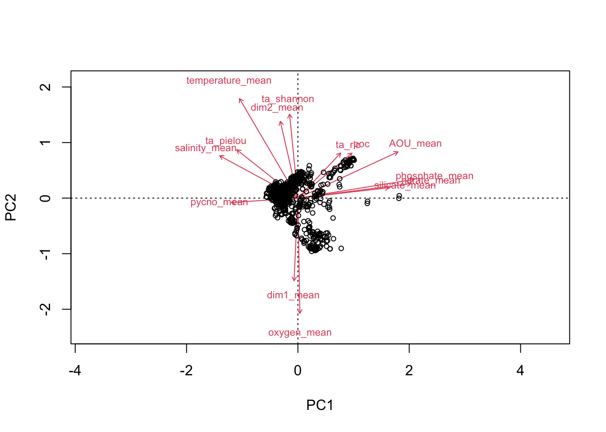

source("utils.R")
load("data/00.carbon_data.Rdata")
load("data/01.env_data.Rdata")
load("data/03.uvp_profiles.Rdata")
rm(env_m, coast)Assemble POC, environmental and UVP data
Load data
Round coordinates of env and UVP data to match carbon data
Carbon data is given on a 2°×2° grid, so we need to round env and UVP coordinates to match the same grid. Carbon longitudes are odd so we need to floor longitude with precision = 2 and then add 1 to the result. Carbon latitudes are even so we can just round with precision = 2.
Env data
env <- env_y %>%
arrange(lon, lat) %>%
mutate(
# floor longitude and add 1 because carbon longitudes are odd
lon = roundp(lon, precision = 2, f = floor) + 1,
# round latitude because carbon latitudes are even
lat = roundp(lat, precision = 2, f = round)
) %>%
# Average all values on carbon pixels
group_by(lon, lat) %>%
summarise_all(mean, na.rm = TRUE) %>%
ungroup()UVP data
We can start by plotting a map of UVP profiles.
profiles %>%
ggplot() +
geom_polygon(data = world, aes(x = lon, y = lat, group = group), fill = "gray") +
geom_point(aes(x = lon, y = lat), alpha = 0.5, size = 0.5) +
coord_quickmap()
Now let’s round the coordinates and replot the map. We also need to average UVP data on our new grid, but before that let’s also compute the number of UVP profiles per carbon pixel.
TODO: is it okay to average plankton diversity metrics on new grid? Or should we group the profiles before computing diversity metrics?
TODO: which depth to consider for UVP data?
profiles <- profiles %>%
mutate(
# floor longitude and add 1 because carbon longitudes are odd
lon = roundp(lon, precision = 2, f = floor) + 1,
# round latitude because carbon latitudes are even
lat = roundp(lat, precision = 2, f = round)
)
n_profiles <- profiles %>% count(lon, lat)
profiles <- profiles %>%
# Average all values on carbon pixels
group_by(sample_ids, lon, lat) %>%
summarise_all(mean, na.rm = TRUE) %>%
ungroup()
profiles %>%
ggplot() +
geom_polygon(data = world, aes(x = lon, y = lat, group = group), fill = "gray") +
geom_point(aes(x = lon, y = lat), alpha = 0.5, size = 0.5) +
coord_quickmap()
UVP profiles are now aligned on the 2°×2° grid. We can also plot the number of UVP profiles per pixel.
n_profiles %>%
ggplot() +
geom_polygon(data = world, aes(x = lon, y = lat, group = group), fill = "gray") +
geom_point(aes(x = lon, y = lat, alpha = n), size = 0.5) +
coord_quickmap()
We can notice a strong sampling in the California current and in the Peruvian upwelling.
Let’s have a quick look at Shannon diversity on this new grid.
profiles %>%
ggplot() +
geom_polygon(data = world, aes(x = lon, y = lat, group = group), fill = "gray") +
geom_point(aes(x = lon, y = lat, colour = ta_shannon), size = 0.5) +
scale_colour_viridis_c() +
coord_quickmap()
Assemble env, UVP and carbon data
Since all three datasets use the same round coordinates, we can join them together. As a result, we will only get env and carbon data where UVP data is available.
df <- profiles %>%
left_join(env, by = join_by(lon, lat)) %>%
left_join(df_c, by = join_by(lon, lat))Our dataset contains 746 points.
Now, we can plot POC data at locations of UVP profiles.
df %>%
ggplot() +
geom_polygon(data = world, aes(x = lon, y = lat, group = group), fill = "gray") +
geom_point(aes(x = lon, y = lat, colour = poc), size = 0.5) +
scale_colour_cmocean(name = "matter") +
coord_quickmap()
Or temperature.
df %>%
ggplot() +
geom_polygon(data = world, aes(x = lon, y = lat, group = group), fill = "gray") +
geom_point(aes(x = lon, y = lat, colour = temperature_mean), size = 0.5) +
scale_colour_cmocean(name = "thermal") +
coord_quickmap()
In both cases, we notice that some POC and temperature data is not available at some UVP locations.
summary(df) sample_ids lon lat ta_ric
Length:746 Min. :-167.00 Min. :-64.00 Min. : 1.000
Class :character 1st Qu.: -99.00 1st Qu.:-12.00 1st Qu.: 3.000
Mode :character Median : -53.00 Median : 20.00 Median : 5.000
Mean : -41.48 Mean : 17.91 Mean : 5.615
3rd Qu.: 18.50 3rd Qu.: 40.00 3rd Qu.: 7.000
Max. : 175.00 Max. : 80.00 Max. :17.000
ta_shannon ta_pielou dim1_mean dim1_var
Min. :0.000 Min. :0.0000 Min. :-7.6772 Min. : 0.0031
1st Qu.:0.703 1st Qu.:0.1499 1st Qu.:-1.9041 1st Qu.: 6.6987
Median :1.193 Median :0.2145 Median :-0.6735 Median : 9.6792
Mean :1.114 Mean :0.2107 Mean :-0.2329 Mean :10.7863
3rd Qu.:1.518 3rd Qu.:0.2870 3rd Qu.: 1.5813 3rd Qu.:13.3074
Max. :2.279 Max. :0.3662 Max. : 8.2424 Max. :81.8247
NA's :12
dim2_mean dim2_var temperature_mean salinity_mean
Min. :-4.7937 Min. : 0.00012 Min. :-1.554 Min. :29.73
1st Qu.:-1.1124 1st Qu.: 3.49582 1st Qu.:14.553 1st Qu.:34.68
Median : 1.2133 Median : 5.09320 Median :21.008 Median :35.56
Mean : 0.7484 Mean : 5.83905 Mean :18.457 Mean :35.51
3rd Qu.: 2.0436 3rd Qu.: 7.02766 3rd Qu.:25.135 3rd Qu.:36.33
Max. : 6.2136 Max. :39.94135 Max. :28.260 Max. :40.07
NA's :12 NA's :52 NA's :52
AOU_mean silicate_mean phosphate_mean nitrate_mean
Min. : -5.128 Min. : 0.5233 Min. :0.0459 Min. : 0.02087
1st Qu.: -2.059 1st Qu.: 1.3773 1st Qu.:0.1612 1st Qu.: 0.69858
Median : 4.772 Median : 2.8978 Median :0.4540 Median : 3.05193
Mean : 17.109 Mean : 4.1358 Mean :0.4737 Mean : 4.11536
3rd Qu.: 28.444 3rd Qu.: 5.2470 3rd Qu.:0.6500 3rd Qu.: 5.57637
Max. :113.374 Max. :73.6952 Max. :1.9656 Max. :29.04219
NA's :52 NA's :52 NA's :52 NA's :52
oxygen_mean pycno_mean temperature_sd salinity_sd
Min. :118.8 Min. : 1.426 Min. :0.1857 Min. :0.01273
1st Qu.:194.6 1st Qu.: 66.792 1st Qu.:0.6688 1st Qu.:0.03911
Median :219.5 Median : 82.095 Median :0.9714 Median :0.05709
Mean :223.8 Mean : 88.795 Mean :1.0038 Mean :0.09600
3rd Qu.:238.1 3rd Qu.:109.969 3rd Qu.:1.2882 3rd Qu.:0.09205
Max. :364.1 Max. :214.769 Max. :2.2836 Max. :0.79736
NA's :52 NA's :4 NA's :52 NA's :52
AOU_sd silicate_sd phosphate_sd nitrate_sd
Min. : 1.402 Min. :0.1263 Min. :0.02510 Min. :0.01531
1st Qu.: 3.376 1st Qu.:0.6155 1st Qu.:0.05511 1st Qu.:0.40815
Median : 4.761 Median :0.8708 Median :0.08403 Median :0.82505
Mean : 7.031 Mean :1.3087 Mean :0.09459 Mean :1.11588
3rd Qu.: 9.234 3rd Qu.:1.7817 3rd Qu.:0.12297 3rd Qu.:1.83724
Max. :51.916 Max. :6.0812 Max. :0.36434 Max. :4.21071
NA's :52 NA's :52 NA's :52 NA's :52
oxygen_sd pycno_sd poc
Min. : 2.073 Min. : 0.00029 Min. : 155.6
1st Qu.: 4.946 1st Qu.: 13.59608 1st Qu.:1632.5
Median : 7.183 Median : 32.96367 Median :2193.7
Mean : 8.314 Mean : 45.73037 Mean :2744.0
3rd Qu.: 9.941 3rd Qu.: 66.43417 3rd Qu.:3463.4
Max. :44.691 Max. :169.37201 Max. :9744.2
NA's :52 NA's :4 NA's :51 Let’s get rid of these points.
df <- df %>% drop_na()We still have 661 points in our dataset.
Let’s redraw our POC map.
df %>%
ggplot() +
geom_polygon(data = world, aes(x = lon, y = lat, group = group), fill = "gray") +
geom_point(aes(x = lon, y = lat, colour = poc), size = 0.5) +
scale_colour_cmocean(name = "matter") +
coord_quickmap()
Subsample env variables
For now, just keep mean variables and ignore sd and var variables.
df <- df %>%
select(poc, lon, lat, contains("ta_"), contains("mean"))Run a quick exploration with a PCA
This allows us to have at correlations within our datasets as well as the main axes of variance.
# Need to remove lon and lat and to scale because units differ between variables
pca_all <- rda(df %>% select(-c(lon, lat)), scale = TRUE)
biplot(pca_all, display = c("sites", "species"), type = c("text", "points"))
The two first axes are:
PC1: nutrient-rich in positive values VS nutrient-poor in negative values
PC2: oxygen-rich and big plankton in positive values VS taxonomic diversity in negative values
Save the resulting dataset
# save(df, file = file.path(data_dir, "04.all_data.Rdata"))